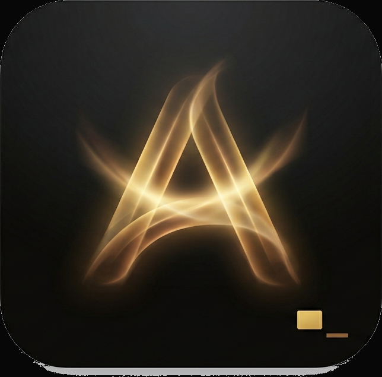

UI Test Case Generator
A browser-based powerhouse for the modern QA. This extension allows you to generate robust test cases and high-precision automation locators (XPath, CSS) directly from active web pages, eliminating the manual grind of DOM inspection.
- Chrome Extension support
- One-click Dynamic Test Case Generation
AureonTerm
A sleek, high-performance terminal designed for seamless SSH, Serial, and Telnet connectivity. Built for developers and network administrators who need speed and reliability across platforms.
- Multi-Protocol support: SSH, Serial (COM ports), and Telnet
- Hardware-accelerated rendering & customizable themes
- Cross-platform continuity for Mac and Windows
Download Installer

Automation UI Inspector
A high-performance browser extension that automates the discovery and mapping of DOM elements for complex web architectures. It streamlines the transition from manual inspection to automated inspection through a precision-engineered technical interface.
- Chrome Extension support
- One-click Inspection of Full Page